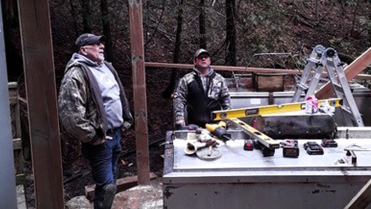
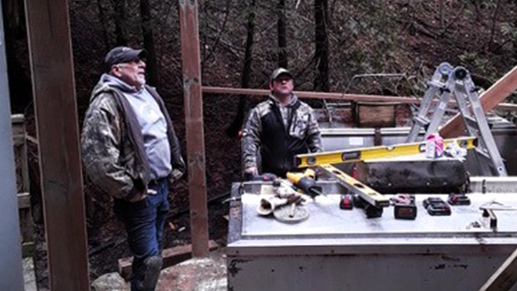

Welcome to the Bayfield Anglers Association
We are a nonprofit organization founded in 1980. As one of Ontario's oldest volunteer-run hatcheries, the BAA operates independently on private land, fostering a strong community of dedicated members, many of whom are actively involved.
The association's scope is extensive, collaborating with various organizations to support fish conservation efforts. Operating from April to October, two members visit the hatchery daily to perform essential tasks, including cleaning, maintenance, feeding, monitoring fish health, and recording water temperatures.
The hatchery features two large stainless steel tanks with capacities of 400 and 500 gallons, installed on a sturdy deck within a sloping ravine. It relies on a groundwater-fed system, with piped water directed into the tanks through spargers, specially designed perforated pipes that create jets, enhancing oxygen levels and generating a circular current that simulates a natural stream environment.

 
